Le système de Londres repose souvent sur d4, Cf3 et Ff4 avec les Blancs. Un ordre de coups possible est 1. d4 d5 2. Cf3 Cf6 3. Ff4. Les Blancs développent leur fou c1 avant de jouer e3, puis organisent leurs pièces autour du centre.
- Avec les Blancs
- 1. d4 d5 2. Cf3 Cf6 3. Ff4
- Repère ECO : D02
Un système propose des repères de placement plutôt qu’une seule suite forcée. Le Londres est utile pour comprendre comment une structure de pions aide les pièces. Il faut pourtant regarder les coups adverses : b2, d4 et votre fou peuvent devenir des cibles.
Il peut vous convenir si vous souhaitez retrouver une organisation familière avec les Blancs. Les Noirs disposent de plusieurs réponses ; connaître un schéma ne dispense pas de vérifier les menaces.
À retenir avant de jouer
- Votre objectif
- Sortir le fou c1 avant e3, puis coordonner les pièces autour du pion d4.
- La décision au centre
- Préparer e4 si la position le permet, tout en répondant aux poussées …c5 et …c4.
- Le point de vigilance
- Un dispositif connu ne dispense pas de retirer un fou attaqué par un pion.
Sommaire : choisir une partie du guide
Sur l’échiquier
Les premiers coups, un à un
Dans la notation française, C = cavalier, F = fou, D = dame et O-O = petit roque. T = tour et R = roi. Le signe x indique une capture, + un échec et # un mat. Les points de suspension indiquent un coup des Noirs.
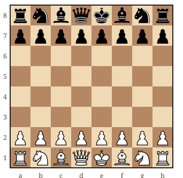
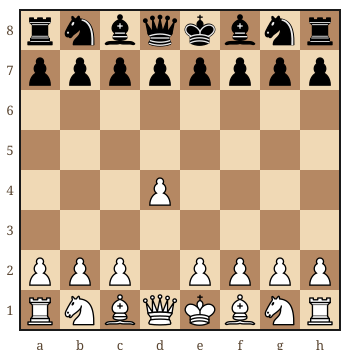
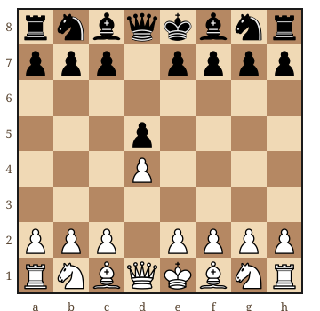
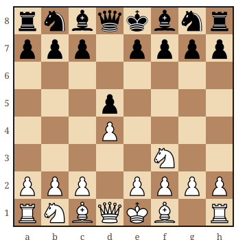
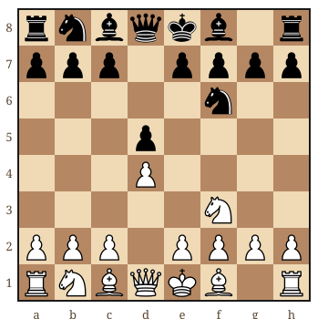
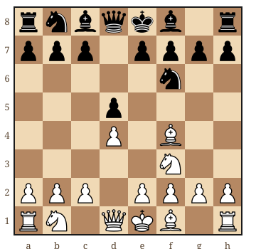
Ce que chaque coup accomplit
- 1. d4
Le pion d4 occupe le centre et ouvre la diagonale du fou c1.
- 1…d5
Les Noirs occupent d5 et contestent eux aussi le centre.
- 2. Cf3
Le cavalier se développe en f3 et soutient d4.
- 2…Cf6
Le cavalier noir se développe en contrôlant notamment e4.
- 3. Ff4
Le fou c1 rejoint f4 avant que le pion e ne ferme sa diagonale de sortie.
Votre fil conducteur
Trois idées à garder en tête
Sortir le fou avant e3
Ff4 permet au fou c1 de rester actif à l’extérieur de la future chaîne de pions d4–e3. Le placement exact doit rester compatible avec les menaces noires.
Soutenir le centre avec des pièces
Cf3 contribue à défendre d4. Les pions e3 et parfois c3 peuvent compléter le soutien, mais n’ont pas à être joués sans raison.
Préparer un développement complet
Le fou f1 peut souvent sortir en d3 après e3. Pensez aussi au cavalier b1, à la dame et à la sécurité du roi.
Un exemple court pour comprendre le plan
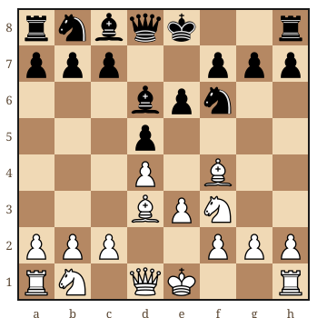
Dans cet exemple, les Blancs ont sorti le fou c1 avant e3, puis développé le fou f1 en d3. Le fou noir d6 attaque f4 : il faut remarquer cette tension et décider si l’on accepte un échange. La position reste à jouer, pas à réciter.
Deux réponses noires à reconnaître
…c5 : Contester d4
Les Noirs peuvent attaquer votre pion central. Comptez ses défenseurs et regardez si un échange ouvre une colonne.
…Db6 : Regarder b2
La dame peut viser b2, que le fou c1 ne protège plus depuis f4. Vérifiez aussi les autres cibles de la dame avant de poursuivre votre schéma.
Ce sont des repères pour vous orienter. Vous n’avez pas besoin de mémoriser leurs ramifications pour commencer à jouer.
Comprendre ce qui se joue
Lire le centre et la structure de pions
Le Londres associe généralement un pion d4, un cavalier f3 et un fou f4. Si vous ajoutez e3, le pion e3 soutient d4 ; si vous ajoutez c3, le pion c3 apporte un autre soutien à d4. Cette organisation peut rendre le centre plus résistant, mais elle ne développe pas à elle seule les autres pièces. Chaque coup de pion coûte un temps que les Noirs peuvent utiliser pour attaquer le centre.
Le placement du fou en f4 a deux conséquences opposées. Il sort avant que le pion e3 ne ferme sa diagonale, ce qui lui donne de l’activité. Mais il ne protège plus b2 depuis c1. Une dame noire en b6 peut alors viser ce pion. Ce détail explique pourquoi un développement qui semble harmonieux doit rester attentif aux menaces sur l’aile dame.
Le couple de pions d4 et e3 ne signifie pas que la partie doit se jouer uniquement à l’aile roi. Les poussées noires …c5 et parfois …e5 peuvent contester le centre. Avant de penser à une attaque, regardez si vous pouvez conserver d4, échanger utilement ou ouvrir une diagonale. La structure fournit des repères, pas une destination imposée à chaque pièce.
Quelles cases chercher pour vos pièces ?
Ces placements sont des repères à vérifier dans la position, pas des coups à jouer sans regarder l’adversaire.
- Fou c1f4 avant e3 dans le schéma étudié
- Il contrôle notamment e5. Une attaque comme …Fd6 oblige à réfléchir à l’échange ou à une retraite.
- Cavalier g1f3
- Il défend d4 et contrôle e5. Le déplacer pour attaquer ailleurs peut modifier la défense de votre centre.
- Fou f1d3 si la position s’y prête
- Le pion e3 libère sa sortie. Depuis d3, il vise h7, mais une diagonale dirigée vers le roi ne constitue pas encore une attaque gagnante.
- Cavalier b1d2 dans de nombreuses constructions avec c3
- La présence du pion c3 interdit Cc3 immédiatement. En d2, le cavalier peut soutenir des projets centraux, tout en nécessitant un passage pour le fou c1 déjà sorti.
- Dame et roirépondre aux menaces, puis roquer
- Une sortie de dame pour défendre b2 peut devenir nécessaire. Elle doit répondre à la position, pas à une règle qui interdirait toute adaptation au schéma.
Comment réagir aux idées adverses
Si la dame noire vient en b6
Regardez d’abord sa ligne vers b2. Le pion c n’a pas le même rôle s’il est encore en c2 ou s’il a avancé : après c3, la diagonale d1–c2–b3 devient libre et Db3 peut être une réponse à examiner. Cela n’en fait pas une solution universelle ; vérifiez les cases intermédiaires et les échanges possibles.
Si les Noirs jouent …Fd6
Le fou noir vise votre fou f4. Échanger peut simplifier, reculer peut préserver votre pièce : comparez les diagonales et les pions qui resteront après la reprise. Ne faites pas un autre coup du schéma en oubliant qu’une pièce est désormais attaquée.
Si les Noirs attaquent d4 par …c5
Comptez les défenseurs de d4, puis imaginez la structure après une capture. Le soutien e3 ou c3 peut permettre une reprise, mais déplacer un de ces pions plus tard changera votre solidité. Cherchez également si une colonne ouverte peut servir aux tours, plutôt que d’ajouter automatiquement un troisième coup de soutien.
Une décision concrète
La dame en b6 : le schéma doit s’adapter
Les Blancs ont sorti le fou f4 et joué c3. La dame noire arrive en b6 et vise b2, que le fou c1 ne défend plus. Le pion c ayant quitté c2, une réponse de dame devient possible.
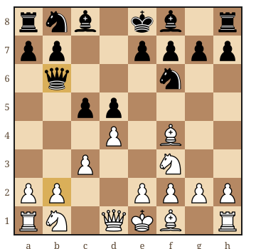
Quel coup peut défendre b2 tout en proposant un échange des dames sur la colonne b ?
Repérez d’abord les menaces et les cases contrôlées, puis proposez une réponse.
Lire l’analyse de la position
5. Db3 est une possibilité : la dame passe par c2, désormais libre, et arrive en b3. Elle protège b2 et fait face à la dame b6. Si un échange a lieu, il faudra observer les pions obtenus après la reprise. L’objectif n’est pas de proclamer Db3 obligatoire, mais de voir comment un détail du schéma crée une réponse concrète.
Comparer pour comprendre
L’échange des fous : deux reprises, deux conséquences différentes
Quand le fou noir arrive en d6, il vise le fou blanc f4. Les Blancs ne sont pas obligés de conserver leur fou à tout prix, et un recul ne garantit pas que l’échange disparaîtra. Pour décider, regardez où les pièces seront reprises et quels pions devront bouger.
La position de départ montre le Londres avec d4, Cf3, Ff4 et e3 face à …d5, …Cf6, …e6 et …Fd6. Les deux branches suivantes gardent le matériel équilibré. Elles produisent pourtant des positions différentes pour la dame noire et les pions proches du roi blanc.
Position commune de départ :
1. d4 d5 2. Cf3 Cf6 3. Ff4 e6 4. e3 Fd6
Rejouez cette position, puis comparez les suites ci-dessous. Ce sont des exemples commentés : elles ne constituent pas deux recommandations équivalentes ni des coups à reproduire sans calculer.
Fxd6 et …Dxd6 : la dame noire reprend
5. Fxd6 Dxd6
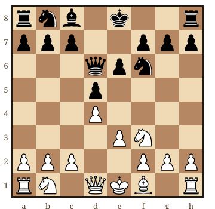
5. Fxd6 Dxd6 échange les deux fous sur d6. La dame noire reprend et devient plus centrale, tandis que les pions blancs ne changent pas. Les Blancs ont supprimé la tension entre les fous, mais ont aussi aidé la dame adverse à trouver une case active.
Cette activité de dame ne signifie pas qu’une menace décisive existe. Vérifiez ses lignes et les cases où vos cavaliers peuvent se développer. Vous avez choisi une simplification : le prochain travail est de coordonner les pièces restantes, pas de continuer à chercher le fou f4 qui a disparu.
Fg3, …Fxg3 et hxg3 : la structure blanche change
5. Fg3 Fxg3 6. hxg3
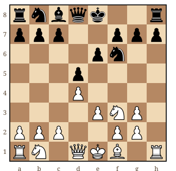
Après 5. Fg3, le fou noir peut encore atteindre g3 par la diagonale d6–e5–f4–g3. Dans la suite illustrative …Fxg3 6. hxg3, le pion h blanc reprend le fou en g3. Les Blancs possèdent alors des pions en g2 et g3, et n’ont plus de pion blanc sur la colonne h.
Les deux fous ont été échangés sans déséquilibre matériel, mais le résultat n’est pas celui de la première branche. La tour h1 dispose d’une colonne semi-ouverte, tandis que la structure autour d’un éventuel roi roqué a changé. Il faut regarder les possibilités d’attaque et de défense avant de juger ces pions.
Vérifiez votre compréhension
Le recul Fg3 empêche-t-il le fou d6 d’échanger ?
Non. Si e5 et f4 sont libres, le fou d6 peut capturer en g3. Un recul doit être examiné avec toute la diagonale adverse.
Après hxg3, la colonne h est-elle entièrement ouverte ?
Non : les Noirs conservent leur pion h7. Elle est semi-ouverte pour les Blancs, puisqu’ils n’ont plus de pion blanc sur cette colonne.
Des pions doublés en g2 et g3 signifient-ils automatiquement que les Blancs sont perdus ?
Non. Ils modifient la protection du roi et les colonnes disponibles. Leur valeur pratique dépend de l’activité des pièces, des menaces et du placement des rois.
À appliquer dans vos parties : Dans vos parties de Londres, comparez les reprises possibles avant d’accepter un échange de fous. Notez la structure obtenue et le rôle nouveau des tours : c’est une manière concrète de sortir du jeu automatique.
Reconnaître les embranchements
Deux variantes à comprendre pour commencer
Ces lignes courtes montrent ce qui change dans le centre et le développement. Rejouez les coups, puis formulez le plan avec vos propres mots ; les réponses adverses peuvent vous amener à une autre position.
Face à …d5 et …e6 : construire sans bloquer son fou
1. d4 d5 2. Cf3 Cf6 3. Ff4 e6 4. e3 Fd6
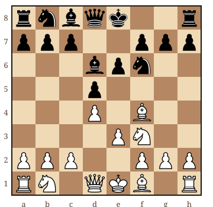
Les Blancs ont sorti leur fou c1 avant de jouer e3. Les Noirs proposent maintenant l’échange avec …Fd6 : le fou f4 doit faire l’objet d’une décision, même si vous connaissez déjà votre triangle de pions.
Le plan à comprendre : Comparez l’échange Fxd6 à une retraite du fou. L’échange change les pièces présentes ; la retraite conserve des possibilités mais consomme un temps. Ensuite seulement, décidez où placer le cavalier b1 et le fou f1.
Face au fianchetto : surveiller le centre
1. d4 Cf6 2. Cf3 g6 3. Ff4 Fg7 4. e3 O-O
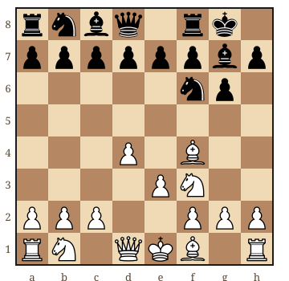
Les Noirs ont développé leur fou en g7 et roqué sans occuper d5 avec un pion. Copier un dispositif prévu contre …d5 serait trop automatique : les Noirs peuvent encore choisir leurs poussées centrales.
Le plan à comprendre : Les Blancs peuvent développer leur fou f1 et préparer le roque. Observez surtout les futurs …d6, …d5 ou …c5. L’absence de pion noir en d5 peut permettre une préparation différente de e4 ; elle ne signifie pas que cette poussée est immédiatement protégée.
Calculer avant de jouer
Piège et vigilance : Le fou attaqué pendant que l’on roque
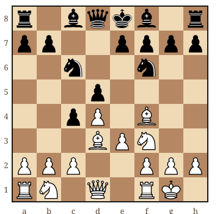
1. d4 d5 2. Cf3 Cf6 3. Ff4 c5 4. e3 Cc6 5. Fd3 c4 6. O-O
Avant de lire la suite, repérez les échecs, les captures et les pièces attaquées.
Voir la suite et le mécanisme
6… cxd3
Le pion noir venu de c5 attaque le fou d3. Les Blancs viennent de roquer en ignorant cette attaque : …cxd3 prend le fou. Même si le pion noir peut être repris ensuite, cela ne rendra pas la pièce perdue. La structure du Londres ne protège pas automatiquement les pièces développées devant elle.
Comment éviter le problème ou y répondre
Après …c4, 6. Fe2 retire le fou de la case attaquée et maintient la possibilité de roquer. Un roque utile reste un mauvais choix si vous laissez une pièce en prise. Regardez d’abord la menace créée par le dernier coup adverse.
Suite de référence à rejouer depuis le début :
1. d4 d5 2. Cf3 Cf6 3. Ff4 c5 4. e3 Cc6 5. Fd3 c4 6. Fe2
Passer de l’ouverture au milieu de partie
Quand les pièces sont développées, regardez les possibilités centrales avant une attaque sur h7. Le cavalier peut-il réellement s’installer en e5 ? Le pion e peut-il avancer sans perdre d4 ? Le fou f4 échange-t-il une pièce importante ? Ces questions font du Londres une position à jouer, plutôt qu’une liste à terminer.
À l’analyse, vérifiez si votre premier problème est venu d’une menace sur b2, d’un échange de fou ignoré ou d’un centre contesté. Rejouez ce moment avec les pièces adverses visibles : le bon apprentissage consiste à reconnaître le changement, pas à refaire le même schéma plus vite.
Le nom et ses origines
D’où vient le nom « système de londres » ?
Le nom renvoie au tournoi de Londres de 1922, qui a contribué à populariser cette organisation des pièces. Il rappelle un événement de l’histoire des échecs plutôt qu’un inventeur individuel.
La dénomination « système » correspond bien au sujet : des placements voisins peuvent être obtenus dans plusieurs ordres de coups. La position illustrée ici est un point de départ pédagogique, pas l’unique manière de jouer le Londres.
Il ne faut pas dater la création de toutes les idées du Londres à 1922. Le tournoi sert de repère pour sa popularisation et son nom.
Les erreurs à éviter dans cette ouverture
Construire un triangle sans regarder
Jouer e3, c3 et Fd3 mécaniquement peut laisser une menace sans réponse. Commencez chaque décision par le dernier coup adverse.
Oublier b2 après la sortie du fou
Le fou c1 protégeait b2 sur sa diagonale initiale. Une fois en f4, ce travail n’est plus assuré par lui.
Traiter le fou f4 comme intouchable
Des coups tels que …Fd6 ou …Ch5 peuvent le viser. Le conserver, l’échanger ou le reculer dépend de la position.
À vous de jouer
Un exercice pour vérifier l’idée
Quel coup sort le fou c1 sur la diagonale h2–b8 avant de jouer e3 ?
Prenez quelques secondes pour choisir et expliquer votre coup.
Voir la réponse expliquée
3. Ff4 développe le fou avant que e3 ne bloque sa diagonale de départ. Le pion d a déjà quitté d2, ce qui libère le passage c1–d2–e3–f4.
Votre prochaine séance de pratique
- Après Ff4, identifiez les cases que le fou contrôle et celles qu’il ne défend plus.
- Placez une dame noire en b6 dans une position légale et cherchez ses cibles.
- Jouez une partie en vérifiant les menaces avant chaque coup du schéma.
Besoin de comprendre vos propres parties ? Les cours d’échecs permettent de travailler à partir de vos positions.
Quelles ouvertures comparer ensuite ?
- Gambit dame : comprendre 1. d4 d5 2. c4 simplement
Comparer le dispositif avec Ff4 à la contestation de d5 par c4.
- Ouverture anglaise : comprendre 1. c4 sans théorie longue
Découvrir une autre manière de développer les pièces autour du centre.
Retrouver les onze ouvertures et choisir votre prochaine fiche.
Questions fréquentes
Le Londres commence-t-il toujours par le même ordre de coups ?
Non. La suite 1. d4 d5 2. Cf3 Cf6 3. Ff4 est un exemple. Le fou peut aussi sortir plus tôt ; les choix adverses peuvent modifier l’ordre et le placement des autres pièces.
Pourquoi sortir le fou avant e3 ?
Le pion en e3 ferme la diagonale qui part de c1 vers f4. Sortir le fou auparavant lui permet de rester à l’extérieur de la chaîne de pions.
Le système de Londres fonctionne-t-il sans regarder l’adversaire ?
Non. Le pion d4, le pion b2 et le fou f4 peuvent être attaqués. Les repères de développement ne remplacent pas la vérification des menaces.